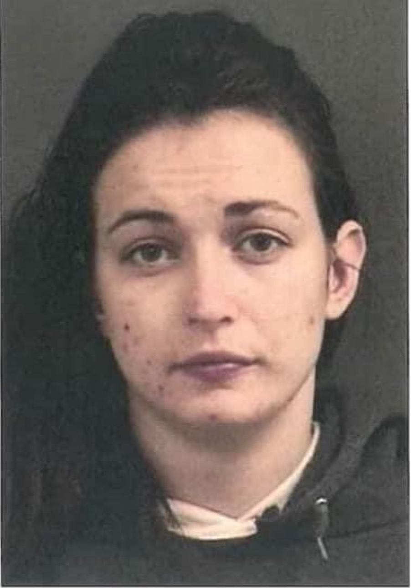

Roxxanne Newman’s parents planned for her funeral, not her high school graduation. They knew that if they got “the call,” it was her father’s job to identify the body. “I just can’t do it,” her mother would say.
She was probably not going to make it — that’s what they thought of their only child together, and what Roxxanne thought of herself, too. Death or incarceration, those were the two doors open for her.
But one day, on April 6, 2012, her father received a call few had been expecting. “Dad,” a shaky voice began, “can I come home?” After years without communication, it was Roxxanne.
Roxxanne had not planned to call her father that spring morning. No, the first thing she had thought of when she woke up was getting her next high, as she had done every morning for years. She was living in squalor and had turned to sex work to subsidize her addiction. She’d scanned her littered bedroom floor in search of drugs. Then the bathroom and the kitchen. Finding nothing, she ventured outside looking for a dealer.
The cool morning air slapped her cheeks as she flung open the front door and walked down the crooked steps. She turned right. She took three steps forward. And she said: “That’s it, I’m done. I cannot do this anymore.”
Roxxanne, now 36, recounts that morning with remarkable clarity. She doesn’t know what changed as she walked outside; she doesn’t know why it changed. But today she is one of about 23 million Americans living in recovery.
Eight and a half years after almost losing her life to a heroin overdose, she is employed as a research assistant at Brown University, enrolled as a master’s degree student at Rhode Island College and is a doting mother of two young daughters. And rather than retreat into anonymity, she has become one of Rhode Island’s preeminent voices on substance use disorder, sharing her story to personalize the overdose crisis and to debunk some of the stereotypes about addiction and its victims.
“Recovery is possible,” Roxxanne says, over and over again.
+++
+++
At 19, she was introduced to cocaine by a customer. The powder took away the self-loathing, anger and crippling insecurity. “I was no longer that little girl in the fifth grade with no Fruit Roll-Ups,” she said. At the time Roxxanne was on probation from the car accident and wanted to avoid trouble, but once that ended she was ready to freefall. Occasional cocaine use soon turned weekly; weekly use soon turned daily.
Roxxanne moved to Maine and began living with a man she had met at the new club she was working at. He dealt drugs, and unlocked an unlimited supply of cocaine. “It was my heaven,” she remembers. But looking back, she knows it was hell. Cocaine-induced seizures began to punctuate her usage. One day, her boyfriend handed her a small pill. “Try this instead,” he told her, teaching her how to crush and snort it. The small pill was OxyContin.
Roxxanne arrived in Rhode Island in September 2006 knowing no one, with a few boxes of belongings to her name and her dog. She had followed the advice of a friend who’d told her that the drugs were cheaper in Providence and the clubs were better paying.
Nothing else in life but Oxycontin provided any real satisfaction. Soon enough, she was no longer taking the drug to get high, but to escape feeling sickeningly low. She felt trapped in an inescapable loop: “I worked so I could make money so I could buy drugs so I would not be sick so I could work so I could make money so I could buy drugs so I would not be sick,” she remembers.
Facing a $500-a-day drug habit, Roxxanne switched from Oxycontin pills to heroin, which was cheaper. She’d been evicted from her apartment for nonpayment of rent and was living in Pawtucket in a room a tattoo artist offered to let her stay in. A doctor — who had lost his license and just been released from federal prison for stealing opioids — offered to inject her, she said. Roxxanne had never used a needle before, so she accepted.
As the needle pierced her skin, any hopes that still lingered within — of being a mom, of going to college, of fulfilling her goal of becoming a psychologist — evaporated, she said. Desire for the drug became an act of survival. She would continue to chase her next high, rather than her childhood dreams.
By the summer of 2007, Roxxanne was out on the streets of Providence. Unable to hold down a job at any strip club, she turned to prostitution.
+++

+++
Then came April 6, 2012. At that point, Roxxanne had nothing: no friends, no nearby family, no clothing other than a pair of ragged jeans she was wearing, bloodstained from when she would wipe her arm after injecting. Her then-husband, Israel Nunez, had her food stamp card. She had Hepatitis C and second stage liver failure. And she was wanted by the police for violating her probation.
“I had nothing other than a drive to live,” she said. She moved back in with her father in Lawrence, MA, and began her recovery process.
But as Roxxanne likes to remind people, “recovery is not a straight shot.” When she returned to Rhode Island May 3 — the night before an important court date and just four weeks after she’d gone cold turkey — she told herself she would use one last time.
She woke up in an ambulance. Dizzy, all Roxxanne could remember from the hours before was repeating “I can’t breathe.” It was her 29th drug overdose, and the closest she had come to dying. “Enough,” she thought.
May 4, 2012, marked the first day in what is now more than eight years sober.
Roxxanne’s unshakeable determination to reignite the hope and dreams of her twelve-year-old-self — to be a college graduate, a psychologist, a mother — drove her to find a stable source of legal income. Very few employers were willing to accept her and her criminal record, but she managed to find a job as a breakfast waitress at a Pawtucket diner.
Michael “Mike” Newman, a veteran officer with the Pawtucket Police Department, was a regular customer there. He came in every morning with his boss and ordered the ham and egg special. The pair flirted back and forth and one day Mike asked her out on a date.
“I’m a recovering heroin addict, I got a nice record, I’m on probation,” Roxxanne told him on date number two or three. “Oh, and in two weeks I start my treatment for my Hepatitis C.”
But Mike, a burly man with kind eyes, saw so much more. Here was a woman who was smart, determined and disarmingly honest.
At first blush, they seem like an unlikely couple. At that point, Mike had been a police officer for more than 15 years. But a belief that people deserve second chances had always guided his work, he said. “People aren’t throw-aways,” served as his mantra. Now, Roxxanne was putting that to the test. He thought: “I’d be a real hypocrite if I didn’t want to see her no more.”
He wondered what his colleagues would say, but ultimately decided that he didn’t care. He was willing to look for another job if it came to that. In the months that followed, it was actually Roxxanne who would lose her job. Her boss didn’t take kindly to her dating a police officer.
But by the next day she had lined up three job interviews. The day after, she started working at another restaurant. “Nothing holds her down. Nothing stops her,” says Mike, now 53.
The pair wed in August 2014, almost a year to the day after first meeting and settled into a home in Cumberland.
Roxxanne became involved in her local church. She found solace at her recovery meetings, hope at friends’ homes and determination at the gym. Mike encouraged Roxxanne to go back to school. “You’re smart, you can do it,” he would tell her. She arrived on campus at the Community College of Rhode Island in early 2015. A year later, the couple welcomed a daughter, Grace.
But along the way, Roxxanne lost sight of herself. Through her studies she has learned that drug use is but one symptom of addiction. “You still can be at a place of self-destruction without using drugs in the recovery process,” she said.
At Roxxanne’s insistence, she and Mike divorced after five years of marriage. “It was the biggest regret of my life,” she says, her voice falling close to a whisper. “And I’ve done a lot of crap.”
Even though the marriage was broken, Mike and Roxxanne remained close. She moved only a quarter mile away. They shared custody of their daughter and Roxxanne continued to have a close bond with Mike’s son from a previous marriage. Family mealtimes and shared school runs remained part of their daily routines.
+++
In the summer of 2017, Roxxanne transferred to Rhode Island College, graduating two years later with dual undergraduate degrees in psychology and chemical dependency, scooping up numerous awards for both her research and community work along the way. She bejeweled her graduation cap with three words: Recovery is possible.
Inside and outside of the classroom Roxxanne is now a vocal leader in Rhode Island’s recovery community, tireless and unflinching. She is pursuing a master’s degree in psychology at RIC, where she also works as a teaching assistant. She presented the keynote address at Governor Gina Raimondo's signing of the executive order establishing the Governor's Overdose Task Force in 2017. And she’s a member of Raimondo’s Juvenile and Criminal Justice Working Group which, last January, issued its final report including dozens of recommendations to address barriers to re-entry and better support young people involved in the criminal justice system.
Her work, Roxxanne hopes, will inform changes in policies and societal perceptions of people in recovery, and those who continue to use. “This is my purpose,” she says.
In 2019, she met someone new, a 27-year-old ironworker also battling addiction. Though he was able to stay clean for the birth of their daughter, Angelina, last February, he began using again a few weeks after that and the couple broke up.
Roxxanne decided that she would allow her new baby’s father to be around Angelina when he could give a clean urine test — which means staying clean for four days. But, as the cycle goes, soon he returned to using. Then came the void that followed his departure. No more planning a life together. Just the excruciating adjustment to life without a friend, a father for Angelina, a would-be boyfriend. “If I could give him my recovery I would,” she said shortly after her daughter’s birth, “because I’ve never seen anything so painful.”
+++
When the pandemic hit, Roxxanne was balancing her recovery, her break up, school and work, two young children in tow. “I would be lying if I said I didn’t consider giving up,” she said. But there is a truism in the recovery community, she added: Don’t give up before the miracle happens.
In the fall, Roxxanne was hired as a research assistant at the Marshall Lab, led by Brandon Marshall, associate professor of epidemiology at the Brown University School of Public Health. Together they conduct research that aims to improve the health and well-being of people who use drugs. “A dream come true,” Roxxanne said.
“She brings a wealth of expertise in overdose prevention and recovery science to our team. She’s an energetic, compassionate and insightful presence in our lab, working tirelessly with our study participants and treating everyone — regardless of their background or circumstances — with dignity and respect,” Marshall said in a recent interview. “I feel incredibly fortunate to have Roxxanne on our dynamic team.”
Roxxanne’s friendship with Mike remained unwavering throughout.
He retired from the police force two years ago, and has since committed himself to supporting Roxxanne’s ambitions and raising their family. “I love it when she achieves her goals,” he said. “And I love being right.” Every time she breaks a new barrier he tells her: “See, I told you that you were special.”
Recognizing all that she was juggling, Mike asked if she wanted to move back in last summer. “He knows all these parts of me,” Roxxanne said. The addiction, the crimes, the trauma, the pain, but also the strength, the recovery. “And he loves me regardless.”
The pair lived together for a few months before finally parting ways before the end of the year. They still get together as a family a few times a week but are at different points in their lives, Roxxanne said recently. “We’re still friends,” she added. “That will never change.”
+++